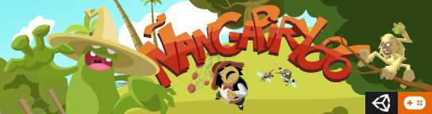
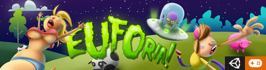

")
")
")

ÑANGAPIRY 86' (Versión Test Demo)
Clasica aventura de plataformas inspirado (muy libremente) en mitologías guaranies del Litoral.
Controles: Para moverse use las "flechas" del teclado, salto con "espacio", correr/agarrar
con tecla "Ctrl", usar item especial con tecla "Alt". Para eliminar a los gauchos es necesario aplastarlos
con un salto encima primero y luego capturarlos con la tecla control para finalmente Lanzarlos
(puedes usarlos como proyectiles para eliminar varios enemigos consecutivamente).
Hacer Click en la imagen de portada para iniciar
Clic inside game's image to start playing
Clicar na imagen do portada pra iniciar jogo

EUFORIA! (Juego Completo)
Sencillo juego para entretenerse un rato en Web o dispositivos moviles, encarnamos a un alienigena
durante sus abducciones, la mayor parte de la acción transcurre durante una noche en el cerro
Uritorco pero hay varias sorpresas adelante para el que persevera.
Controles: con mouse o dedo en pantallas táctiles: movemos nuestra nave
tocandola y arrastrandola; para abducír humanos u otras cosas basta con tocar y mantener el dedo
encima del objectivo hasta atraparlo.